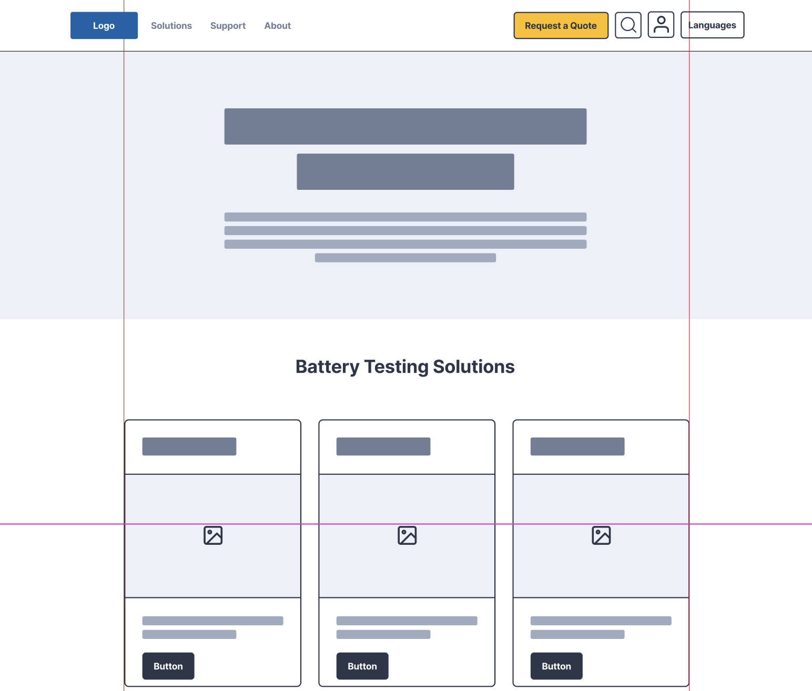

Project Overview
Arbin Instruments manufactures high-precision battery testing equipment used by industry leaders like Tesla and NASA. My goal was to redesign the corporate website to reflect this level of engineering excellence. I moved the brand away from a legacy industrial look to a modern, clean, and tech-forward aesthetic that communicates precision and reliability.
1. Visual Identity: "Engineering Precision"
The core challenge was translating complex technical specifications into an elegant visual language. I established a new Art Direction centered on clarity and structure.
The "Tech" Color Palette
Moved away from dull grays to a sharp, high-contrast palette using deep navy and electric blue accents to highlight key interactions and product tiers.

2. Figma Wireframing & Prototyping
Before writing a single line of code, I utilized Figma to architect the entire user experience. This phase focused on structural layout and navigation flow.
- Low-Fidelity Wireframes: Created rapid layout iterations to define the information architecture, ensuring that the "Product Finder" and "Support" sections were accessible from the global navigation.
- Interactive Prototypes: Built clickable prototypes to test the "Mega Menu" navigation logic. This allowed stakeholders to "feel" the site flow and approve the hierarchy before development began.
3. Modular Component Architecture
To ensure consistency across 50+ pages, I built a scalable Design System in Figma, utilizing Auto-Layout and Variants.
- Card Components: Designed a flexible "Product Card" component that adapts its content based on the equipment type (Cell, Module, or Pack testers), maintaining visual unity while displaying different specs.
- Hero Templates: Created reusable header templates for "Product Pages," "Application Pages," and "Blog Posts," ensuring a cohesive brand experience regardless of the content type.
4. Responsive Layout Strategy
Battery engineers often access documentation on tablets or mobile devices while working in the lab. I designed a fluid grid system that maintains data integrity across all viewports.
- Mobile-First Tables: Redesigned large specification tables to transform into swipeable card views on mobile, solving the common issue of "horizontal scrolling" on small screens.
- Touch Targets: Increased the size of interactive elements (buttons, navigation links) to meet accessibility standards for touch interfaces.
View Live Website